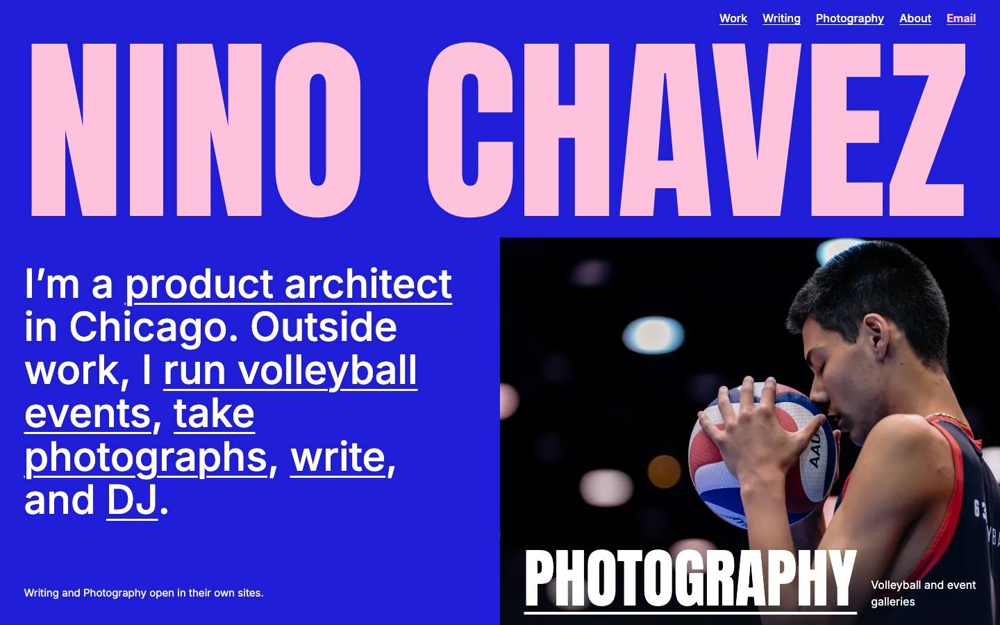
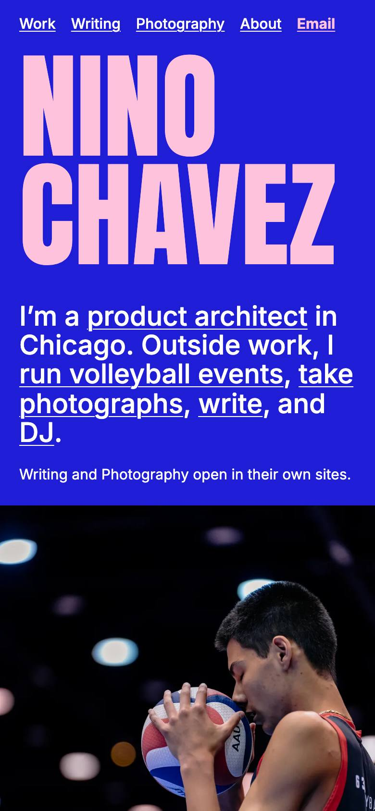
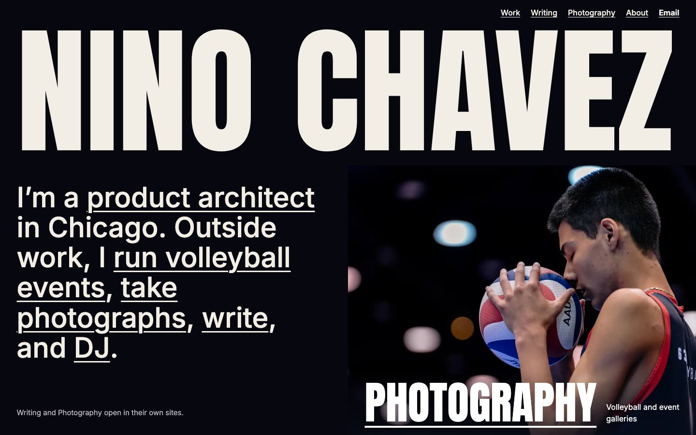
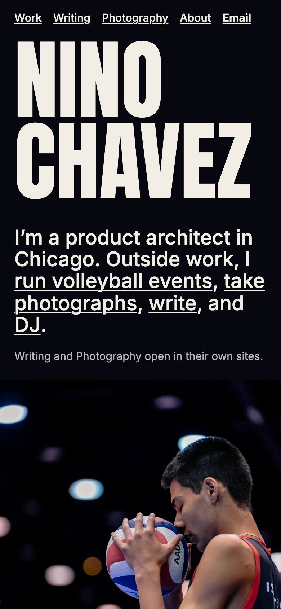
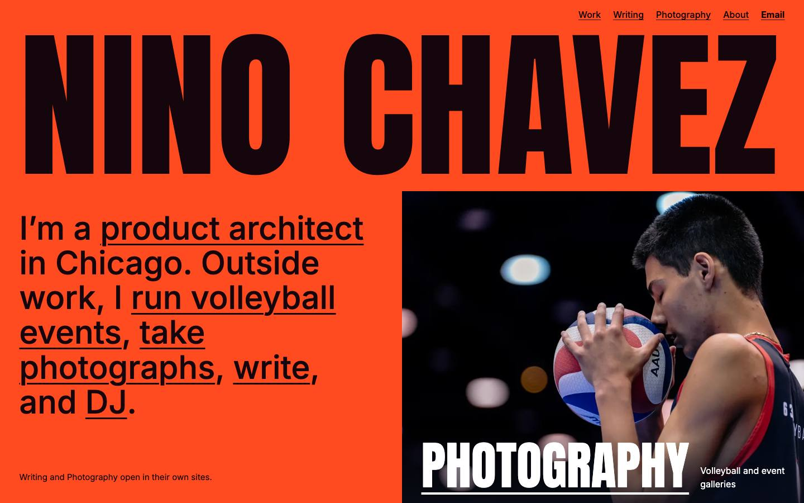
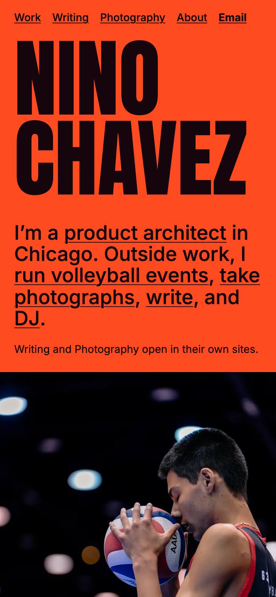

Same layout and words, now with your statement's phrases as links. Only the color differs. Pick one and I'll build it across the site.
A reviewer who saw only the screenshots ranked it first for identity and clear sections. It's also the one that keeps Profile distinct: Night Game sits close to your charcoal Photography site and Flickday's black, and Ultra grows out of the blue you already chose.


Feel. Electric blue and pink, like an art-school poster. Confident without pointing at any one industry.
Reviewer. Ranked first. Clearest sections. Found the full-strength blue tiring behind long text.
Since then. Blue slightly deepened. About now sits on pale, so blue stays on the hero and section heads. Orange moved off Let's Pepper, which it fought.


Feel. The page takes its black from the arena in your photograph, so the two melt together. Each project gets its own color.
Reviewer. Ranked second. Best at telling projects apart, but too many hues, and amber stacked on yellow looked cheap.
Since then. Yellow and magenta removed. The Rotation is now on bone, and Email is no longer a weak red.


Feel. Loud and sporty, picking up the red in the jersey. The simplest palette: orange, near-black and bone.
Reviewer. Ranked third. Coherent, but the orange mostly decorates. Read as a sports-event operator.
Since then. Pink panel dropped. About moved to bone, because the long text on orange was tiring.